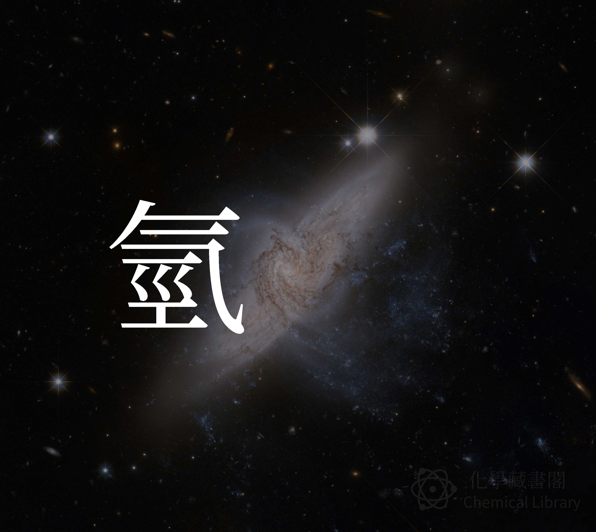

最輕的元素 - 氫
2017年4月30日

元素週期表第一行的的第一個，就是氫
他是最輕最小的元素，符號為H，原子序為1。氫的原子量為1.00794
氫在宇宙中是最常見的物質，在常溫常壓，氫氣為雙原子分子，也是水(H2O)的組成成分
簡介
- 類別：非金屬
- 無色無味
- 常溫為氣體
- 攝氏0度時密度 0.08988 g/L
- 熔點(攝氏) -259.16
- 沸點(攝氏) -252.879
氫的歷史
1671 年 波以耳發現鐵+酸會產生氣體 – 氫氣
1766 年 亨利·卡文迪什發現一樣的結果，並命名這個氣體為 易燃氣
1783 年 拉瓦節命名為 Hydrogen，意思為希臘文中的水和創造者
氫氣的製作
金屬加酸
利用活性較大的金屬，加入酸中Zn + 2H → Zn2 + H2
對水電解
當電流通過液態水時，氧氣會聚集到正極，氫氣累積到負極2H2O → 2H2 + O2
蒸氣重整
對天然氣進行蒸汽重整來製作氫氣，在700~1100 °C，水蒸汽和甲烷會發生反應，產生一氧化碳和氫氣CH4 + H2O → CO + 3H2
氫氣特性
易燃
可和所有可氧化元素反應
同位素
天然同位素：
- 1H 、D (氕 讀音：ㄆㄧㄝ)
- 2H 、T (氘 讀音：ㄉㄠ)
- 3H (氚 讀音：ㄔㄨㄢ)
人造同位素：
- 4H
- 5H
- 6H
- 7H